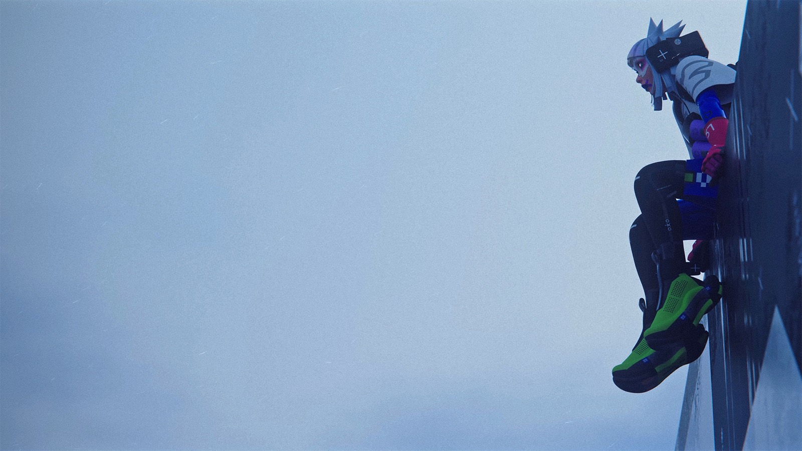
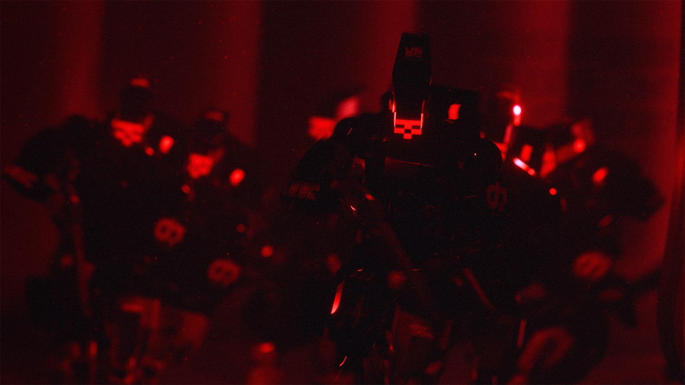

Classes: shell models and their stories
Bungie's official tagline for shells: "Powerful. Configurable. Expendable." Every playable class is a shell model with its own lore biography. The face, voice and personality are a personality series: one identity printed onto thousands of identical bodies. That's why every Vandal in the game looks the same - they are literally a mass-produced product. Nona, the agent of their maker Sekiguchi, calls each shell "a marvel of biosynth engineering" - and adds, sweetly, that your precursors were not so lucky.


Vandal // Glitch series
Combat anarchistBuilt by MIDA rebels out of a hijacked truckload of standard shells: overclocked agility, microjets in the legs, a disruptor cannon on the forearm. Its debut was a daylight raid by a dozen Vandals on a UESC weapons convoy - after which MIDA recruitment jumped 75-fold.

Stats
The single shared face of the Glitch series was a feature: the authorities couldn't track individual dissidents. The wardrobe draws on the Quincy and Palace Mons counterculture, and Vandal-inspired outfits still trend among Martian youth - a symbol of resistance.
By the in-game Runners' Guide, Amplify isn't a "Vandal feature" but a hack: the overclocking technique was first cracked open by shell athletes who "jailbroke" a shell's movement mechanics, and MIDA weaponized it, launching the modern wave of amplified movement abilities now used by Runners of every stripe, regardless of faction. Vandals themselves "move at speeds that would snap another shell's biosynthetic bones." The forearm Disrupt Cannon is a repurposed energy weapon, dismantled and rebuilt inside a cyber-arm: it knocks a target off position, sometimes clean off a ledge. canon
The series' former name was "Vandal (Formerly Glitch)": at the 2025 re-reveal the shell was shown under the old series name. datamine
Lore frames the debut raid as a newspaper headline, "A Dozen Lunatics Bumrush UESC Mobile Armory"; per the source's exact figure it lifted MIDA recruitment by "7500%" - the same 75x. The series' motto is "illicit running made fashionable": "it's easier to disappear when an entire subculture rises up around your aesthetics." The Disrupt Cannon flavor line: "Nothing better than a trick up your sleeve." Vandal is voiced by Erica Lindbeck. canon

Destroyer // Locus series
Assault specialistOriginally a riot-control unit so brutal the UESC banned it in 2879 (see the "Consequence of Violence" treaty above - the Destroyer is a big part of why it exists). The ban, naturally, stopped no one. The Locus personality was trained on the combat experience of UESC soldiers.
Stats
The Destroyer is a product of UESC Combat Science Labs; after the "Consequence of Violence" amendment (2879) military use is officially banned, but corporate private security still runs it. The Locus personality series is trained on the combat experience of UESC soldiers and gives its wearer steady calm and confidence in a fight - whatever the threat level. canon
The real reason the Destroyer was pulled from service isn't only its brutality. The Prime module Search and Destroy - "shoulder-mounted, impact-tracing targeted artillery," where every third round that lands unleashes a micro-rocket salvo straight to the point of impact - proved "too efficient," and soldiers on prolonged use of its neural/HUD live-round cross-mapping showed "mental destabilization." Runners have reached the model through black-market channels since at least 2872. canon
The series' former name was "Destroyer (Formerly Locus)." datamine
The Locus personality is modeled on "combat field leaders." Destroyer is voiced by JB Tadena; in the launch cinematic the aggressive Destroyer is forced to broker peace between a feuding Triage and Thief. canon
Rumor says the official reason for the withdrawal covered up "something more terrible," and that the UESC itself quietly runs Destroyers against Runners across Sol. theory

Assassin // Void series
Shadow agentA stealth shell with full invisibility. According to in-game rumor (unconfirmed), the prototype's first test subjects were left as "empty husks" by the untested stealth tech, and the Void personality is what remains of their minds.
Stats
The UESC does not officially acknowledge developing the Assassin's stealth tech, but Runner circles trace it to UESC Spec Ops prototypes. Void is considered the first "personality" shell series: by legend it's named after a nameless Runner who lost his mind in the first trials of active camo fused with neural transfer. canon
By the in-game guide the Assassin's tech rests on a combo: Active Camo isn't a separate button but a passive trigger that fires when the shell steps into its own smoke, via nano-triggers in the chassis; the Smoke Screen itself comes from "pocket-sized synth emitter disks" originally built for emergency responders. The Void series, per the guide, was "discovered in archived neural code and never officially released," copied from one of the first test subjects to die - the one "who perfected the technology that destroyed them." canon
The rumor's wording is harsher than the guide's: the mind transfer caused "near total loss of memory followed by total loss of self." The reference to the classified "UESC/SEKGEN files" isn't reproduced verbatim by the sources - that detail is unconfirmed. theory
The series' former name was "Assassin (Formerly Void)." datamine
The series motto: "the unseen blade strikes first." Void is voiced by Elias Toufexis - also the voice of Rook. In a cinematic, asked by Blackbird "Do you ever wonder what happened to these people?", Void flatly answers "It's not my business" (sources disagree on which clip the line belongs to). canon

Recon // Blackbird series
Intel specialistA former UESC military recon shell; its tracking suite later made it the favorite of bounty hunters, to the point where the model became synonymous with vigilante justice in Sol. The default skin has a defaced UESC chevron: a hint at desertion. Rumor says the military dropped the model after discovering its sensors damage the wearer's mind.
Stats
Recon is another trophy of the UESC combat initiative: official use was wound down when the incoming intel stream started damaging the wearer's neural integrity. The Blackbird series was built to keep soldiers' minds stable under fire - and Runners hacked a hidden "command:follow" protocol baked into every UESC Combat Science Labs battle personality matrix. canon
The guide spells out the "mind damage" mechanism: the incoming intel stream "had a chance to scramble the neural integrity of the mind housed within," which is why the UESC shut the program down. And jailbreaking the hardwired "command:follow" raised an uncomfortable question of whether a Runner is autonomous at all - and that is exactly what pushed the UESC to shelve public Runner operations. The Blackbird personality is meanwhile designed as a "commanding presence" focused on directness, so intel gets through undistorted. canon
The series' former name was "Recon (Formerly Blackbird)." datamine
The guide describes the Tracker Drone as "a living grenade if you remove any consideration for biologics and sentience, and focus solely on threat appraisal and eagerness to detonate." Beyond its known abilities the series also lists the Interrogation and Stalker Protocol traits. Voiced by Nika Futterman. canon

Thief // Icon series
Covert acquisitionsA bespoke shell built inside Sekiguchi itself for a raid on a competitor. The operator never returned the body, and the specs leaked to the black market. The Icon series wears the face and voice of Sekiguchi's former lead Shell Science Director - the corporation got robbed wearing its own face.
Stats
Rumor holds the first Thief was an in-house Sekiguchi build for a raid on a competitor: the hired Runner never returned the shell, and the specs leaked to the black markets months later. The Icon series is fully aftermarket - copied from the face and voice of Sekiguchi's former lead Shell Science Director, Dr. Yoki Samura, which is why the Thief carries a recognizable public image instead of anonymity. canon
The Thief leak dragged in a high-profile case: in late 2885 the UESC opened an investigation into SEKGEN - right as the TRAX data breach broke. The Icon series lives on a paradox: "showmanship and anonymity are two opposing traits Thieves tend to value" at once. Dr. Yoki Samura's face gives law enforcement "limited insight into actual identity and motives" while turning the shell into a recognizable brand; the shell itself is described outright as "custom engineered to claim the prize." canon
The series' former name was "Thief (Formerly Icon)." datamine
The series' abilities carry "thief" names: Grapple Device, Pickpocket Drone, X-Ray Visor and The Finer Things. The Grapple Device is a "mag-lock anti-grav saucer" on a reinforced flex-weave cable that pulls the shell to its target; the guide calls it "another example of Runner resourcefulness." canon

Triage // Aux series
Field medicHealing drones, remote revival of squadmates, EMP. Field revival is the ability UESC forces hate most - and the Triage is the protagonist of the official launch cinematic "In Death We've Just Begun," scored by Poppy and Son Lux.

Stats
TRAXUS built the Triage for the Martian mines: shell-workers were dying off under lethal conditions, and a medic was meant to keep them in service. The Aux personality series was developed together with the UESC and Sekiguchi Genetics before its official debut - Runners got to it ahead of the market and twisted the calm "medical" voice toward combat aggression. Per the wiki (citing the game), Triage models were fielded en masse in the corporate cold war on Tau Ceti IV in 2893. canon (thanks to u/URTISK for the tip)
The Prime module Reboot+ is literally "the perfect healing weapon": through "defib actuators" it either lifts a downed teammate or hits an enemy with an EMP, depending on where you aim; originally emergency-responder gear that Runners reworked into "a lifeline and a weapon for use in hostile zones." The shell's design philosophy is a medic who "cannot depend on others because others depend on them"; the standard Aux voice is built to give a "calming bedside manner," to which Runners added combat aggression. canon
"In Death We've Just Begun" was directed by Harmony Korine and Sam Goldwater; music by Ryan Lott (Son Lux), vocals and lyrics by Poppy. It's not a single Triage on screen: it's a trio of Triage + Thief + Destroyer that reaches the endgame location Cryo Archive aboard the Marathon, where an entity attacks them - the Thief runs off with the loot, the Triage drags the Destroyer. Voiced by Elliot Knight. canon

Sentinel // Rampart series
Defensive engineer (new in Season 2)A gadget-loving defensive tech built on stolen UESC infantry kit. Confirmed toys: the Defender System - a deployable platform that swats grenades and rockets out of the air and steadies nearby allies' handling - a Prey Tracker motion radar, and the Castle Doctrine passive that hardens the shell when enemies close in.
Stats
The first recorded Sentinel appearance was the siege of Trenchway Holdout beneath Antarctica: a crew of radical scientists in hijacked UESC shells held out for three months, the Central Security Agency lost 27 agents and finally collapsed the tunnels. After the Trenchway tactics leaked into Runner circles, the Sentinel became a standard for recon and raids. In Sol the GADGE (Rampart) personality series is officially considered illegal identity theft - compiled from stolen neural models of Intelligent Design Labs' mechanic-scientists. canon
The Defender System is not a universal shield: the platform knocks down anything explosive (grenades, rockets) but lets bullets through; military by origin, it's "tuned against Runner ordinance" and over time learned to counter shell-specific threats like the Destroyer's Search and Destroy and recon drones. The tactical Snare Mine is a "handheld proximity-triggered detonation device" that scatters submunitions to immobilize everyone in range; by origin it's mining explosive shrunk to an anti-personnel format. canon
The Sentinel is presumably the very first shell ever shown to the public: per the wiki it opened the original Announcement Trailer (a detail on a single stub source, verification incomplete), though it only shipped as a class in Season 2 (June 2, 2026). A damaged Sentinel helmet with UESC combat records can be found as loot aboard the Marathon. canon

Rook
ScavengerLess a class than a mode of desperation: a solo drop into an already-running match with randomized junk for gear, unable to even progress faction contracts. In lore terms - expendable even by Runner standards.
Stats
The Rook isn't a biomaterial shell but a hijacked base robo-frame - the kind the UESC and corporations use to move manual labor; Runners bolt a temporary neuro-synchronizer onto it and inhabit the body until neural degradation. No implants, no cores - the Rook never reaches the full functionality of a biocybernetic shell. The "Lunar work release" tagline hints at origins in lunar penal labor. canon
The Rook's abilities are pure Runner improvisation. Recuperation simply triggers the frame's factory-built emergency repair system (installed so the hardware could still be used after a production incident), buying a little longer in the scrap. And Signal Mask is a "pure back-channel hack thrown together somewhere in orbit above Tau Ceti in response to the UESC's mobile war crimes": a holo-mask fools the sensors of UESC autonomous robotic soldiers (ARS) into taking the Rook as one of their own - until it opens fire or breaks into a sprint. No one knows who coded it: the specs just "dropped into a local backchannel and spread like wildfire." canon
The Rook's in-game description is a wall of warnings ending on "GOOD LUCK": solo only, stripped loadout, contracts paused, restricted zone access, requires Season Level 3. The Rook has no cosmetics at all, and every listed stat is zero - the only class like it. The Rook is voiced by Elias Toufexis, the same actor who voices the Assassin (Void). canon